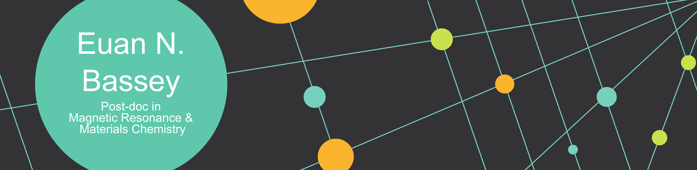

Below, you'll find links to talks I have done (newest first) - please take a look and enjoy!
pjMATPASS. Euan provides an overview of the pjMATPASS pulse sequence used in Nuclear magnetic resonance (NMR) spectroscopy.
Hahn Echo. Euan examines the Hahn echo pulse sequence in three different ways.
Eyes to the Spin: Characterising Paramagnetic Battery Cathodes with EPR and DFT. Euan gives an overview on using multi-frequency, variable-temperature electron paramagnetic resonance (EPR) spectroscopy combined with density functional theory (DFT) calculations to understand the complex electronic and magnetic structures of battery materials.
Paramagnetic NMR: Motion, Migration, Charge Compensation in a Na+ Battery. Euan discusses some of his PhD work on a Na+ ion battery cathode, focusing on 17O, 23Na and 25Mg nuclear magnetic resonance (NMR) spectroscopy.
ESR (EPR) Tutorial. Euan gives a brief overview of EPR spectroscopy. Note the lack of consistency between the title of this talk and his previous talk…